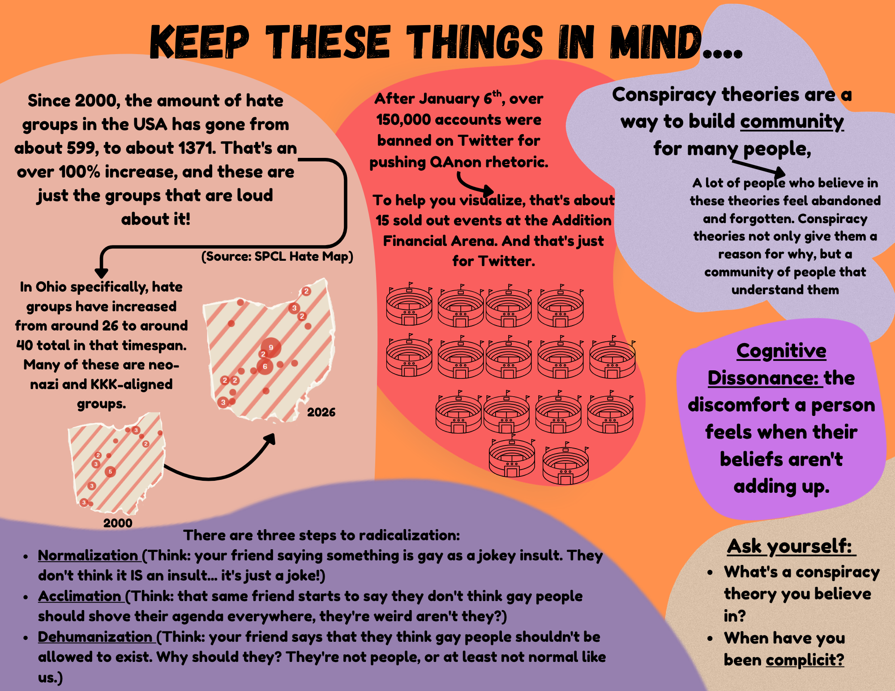
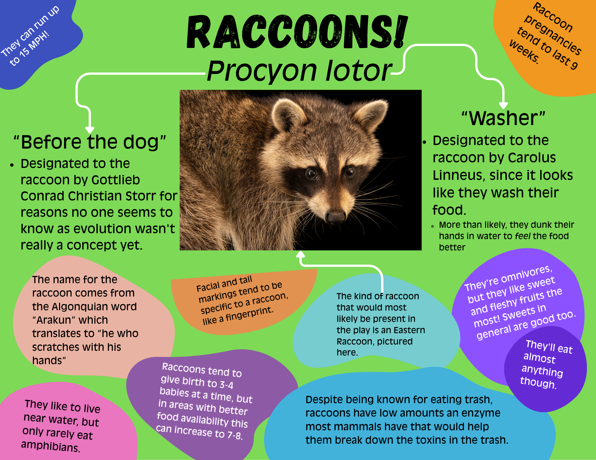

Dramaturg's Note
Contact: alyssa.barrack@ucf.edu
Available for individual meetings as requested.
Hello everyone! We are Alyssa and Sam, your dramaturgy team for this production. We look forward to digging into this rich, intense, and timely show with you all this summer.
Our approach to this play involved figuring out how to give everyone easy, accessible entry ways into some of the many big themes of this text. The packet has sections that dive into thematic anchors in the play, big questions the play asks of us and our audience, and character-focused materials to help us build out the world and understand the people we are portraying. Our goal is to get us all thinking about how these ideas operate structurally and personally in the play and the world at large. I encourage you to navigate the website nonlinearly: find ideas that feel most relevant to your work, identify connections between ideas/sections, and keep a running list of questions! This is a space for curiosity and exploration, and Sam and I are available to help you find additional resources, talk through ideas, and even undergo additional research with/for you as we work together!
Use the sidebar to jump to specific pages, or the arrows at the bottom of each page to move through sections sequentially. The Networked Topics page includes an interactive graph. Clicking on a node (circle with theme title) will open a panel with notes and resources related to that topic. The Character Pipeline section includes a worksheet to help guide you in mapping your character's conspiracy thinking trajectory. It is optional! If you have questions about this worksheet or want to talk through it together we can find time to do that!
Introduction & At a Glance
See the following links to articles that you should skim on your own as we begin the process! These are about the Lions Club and the Danville Raccoon Dinner they host annually. Bring your questions into rehearsal!
Danville Lions Club 83rd Annual Raccoon Dinner Lions Club — About the Organization The Danville Lions Club Website- Playwright
- SMJ · smj's website


Big Questions
This is a list of big questions the play asks of us and our audience. We'd love to add to this list with your suggestions as we work! Let us know in an email or before/after rehearsal if you've got one to add.
- i.What emotional needs do conspiracy theories meet [for our characters]?
- ii.How do conspiracy narratives feel empowering, and how are they destructive?
- iii.How do contemporary conspiracies spread through mainstream places like reddit, facebook, tiktok, instagram, etc.?
- iv.How are we, as individuals, complicit?
- v.What do we forgive for the sake of comfort, friendship, peace, and where are the lines?
Networked Topics in This Play
Click any node to open our research notes, quotes, and resources on that topic. Drag to rearrange. Scroll to zoom. Darker nodes are primary anchors.
Raccoon Culture
[Add your introduction to this section here. Why raccoons? What drew you to the cultural meanings, symbolic histories, or representations that feel relevant to this production? What do you want the company to be thinking about before they dig into the sub-topics below?]
[Sub-topic 1]
[Your notes on this aspect of raccoon culture, symbolism, or natural history. What's the connection to the play? What should the company know or notice?]
[Sub-topic 2]
[Your notes on this aspect of raccoon culture, symbolism, or natural history.]
[Sub-topic 3]
[Your notes on this aspect of raccoon culture, symbolism, or natural history.]
Reference Documents & Further Reading
[Add a brief note here about how you've organized these references and what you'd most recommend someone start with. What's the most essential reading? What's a good entry point for someone who wants to go deeper on a specific topic?]
Visual Library
[Add your note here about what you've gathered and why. What were you drawn to? What do you want the company to sit with visually before they come into the room? You can also embed a Google Slides presentation or Pinterest board here using an iframe if that's easier than uploading individual images.]
replace with <img>
replace with <img>
replace with <img>
replace with <img>
replace with <img>
Character Pipeline Activity
This activity is meant to help you trace how your character may have moved through the radicalization cycle — the back-and-forth process of normalization, acclimation, and dehumanization that shaped their identity and behavior at the top of the play. There are no right answers.
Normalization
Extreme ideas, rhetoric, or behaviors are made to seem ordinary or inevitable. Repeated exposure to a fringe idea until it no longer registers as alarming. This may look like repetition of images or text online, ideas repeated by friends or colleagues, memes and humor, and more.
Acclimation
Normalization is passive exposure to ideas, but acclimation is an active settling into these ideas. In this phase, a character begins to orient their identity and relationships around the normalized idea. They have accepted the idea as normal and are trying it on in their own speech, behaviors, posts, etc. This phase allows someone to become more comfortable with fringe ideas post-normalization.
Dehumanization
Once a person has acclimated to fringe ideas, they can move towards dehumanization — no longer thinking of "others" outside of their fringe belief as fellow humans worthy of respect, acknowledgement, or even rights. This is the last spot in the triad, but also the most likely to cause backtracking in this cyclical model. It can be difficult to buy into dehumanization if acclimation is not fully complete. That said, once a character has dehumanized a target (or themselves), that act makes the next round of normalization easier.
The Cycle
These stages feed each other recursively. Each cycle of normalization makes acclimation faster; each act of dehumanization becomes the new baseline to normalize.